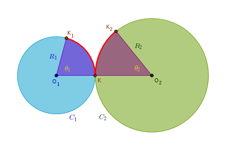
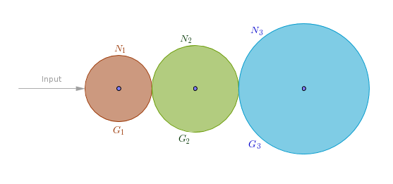
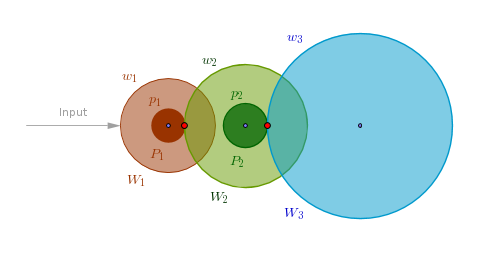
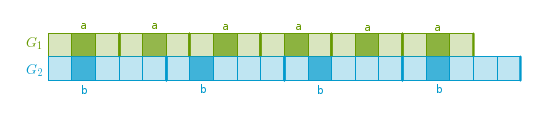
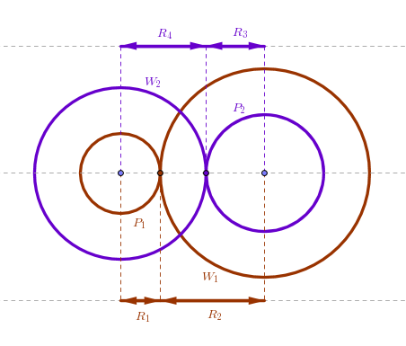

1) Rolling Surfaces
2) Tooth Profiles
3) Gear Trains
4) Hunting Tooth
5) Procedure
6) Second Hand
7) Minute Hand
8) Hour Hand
9) Coaxal Hands
10) Software
11) Literature
Rolling Surfaces
In the Pendulum chapter we have learned how to calculate the length of a pendulum's rod \(l\) for a given period \(T\). In the Escapement chapter we have learned how to harness the back and forth motion of a pendulum and convert it into a predictable circular motion of a special, escape, wheel. In this chapter we will investigate how to complete a clock's design by adding the hands to it.
An addition of the hands to a clock can be reduced to an addition of the corresponding gear trains to it. A gear train is a collection of two or more gears so before deep diving into the trains let us look at their atomic unit - a pair of meshing gears.
Note that as a historic heritage large gears are called wheels and their teeth are called teeth. Small gears are called pinions while their teeth are called leaves. However, everything that follows is applicable to wheels and pinions and teeth and leaves in equal measure.
Two rigid surfaces rolling without slipping is the underlying requirement for a large class of gears including the ones of interest to us - spur gears which are the subject of this chapter. For two arbitrary rigid surfaces to roll without slipping two conditions must be met:
1) The point of contact must be on the straight line connecting the centers of rotation of each surface called a Line of Centers or a Center Line, the straight line \(O_1O_2\) in the drawing below.
2) The projections of the linear velocities and accelerations of both surfaces at the point of contact on a tangent common to both surfaces must be equal in magnitude and same in direction.
The last requirement by itself does not impose any additional constraints on linear velocities - it only states that at any instance the two must be equal in magnitude and same in direction. Since acceleration captures the change of velocity over time, its presence in the constraint tells us that velocities may change but they must do so in unison. In other words the velocity ratio may vary or remain constant. From this point on we will only consider a constant velocity ratio.
Even though the above rule can be applied to arbitrary rigid surfaces we will only consider the spur gears based on right circular cylinders or simply cylinders. Let \(C_1\) and \(C_2\) be two such cylinders rolling without slipping. Further, let the axes of rotation of \(C_1\) and \(C_2\) be parallel and remain at the same distance from each other at all times:
Imagine now that the instantaneous point of contact \(K\) splits in two as the surfaces turn. The point \(K_1\) will then travel along the circumference of \(C_1\) while \(K_2\) will travel along the circumference of \(C_2\). In a given amount of time \(K_1\) will trace the arc \(KK_1\) while \(K_2\) will trace the arc \(KK_2\). The second requirement of the equality of linear velocities' projections means that even though the angle swept by each point may be different the lengths of both (highlighted) arcs must be the same:
$$\begin{equation} v_1 = \omega_1R_1 = \omega_2R_2 = v_2 \end{equation}$$ $$\begin{equation} \frac {\omega_1}{\omega_2} = \frac {R_2}{R_1} = const \end{equation}$$where \(\omega\) designates an angular velocity. The equation (2) tells us that in the case of a constant linear velocity ratio for two cylinders to roll without slipping the ratio of their angular velocities must remain constant as well. Bare cylinders do not transmit torque and keep a constant angular velocity ratio at the same time too well that is why they are given teeth. The teeth are placed on a cylinder in such a way that some portion of them, called a face, protrudes beyond and some portion, called a flank, is submerged below the circumference of the generating cylinder. The radial height of a face is called an addendum and the radial height of a flank is called a dedendum.
In the above manner we can construct two gears which when engaged have the angular velocity ratio equal to that of two rolling virtual or generating cylinders. Such cylinders are called Pitch Cylinders. A circle obtained by cutting a pitch cylinder with a plane perpendicular to its axis of rotation is called a Pitch Circle. The radius of a pitch circle is called a Pitch Radius and the diameter of a pitch circle is called a Pitch Diameter.
A circle concentric with the pitch circle passing through the tips of the gear's teeth is called an Addendum Circle or an Outer or a Tip circle. A circle concentric with the pitch circle passing through the roots of the gear's teeth is called a Dedendum Circle or a Root Circle. Hopefully these definitions that I gave in the Escapement chapter are more understandable now.
Euclid's Elements Book \(3\) Proposition \(13\) states that a circle does not touch another circle at more than one point whether it touches it internally or externally. This single point of tangency of two pitch circles is called a Pitch Point. From Book \(3\) Propositions \(11\) and \(12\) it follows that for two gears engaged either externally or internally the pitch point is always located on the line of centers.
A straight line perpendicular to a tangent common to two tooth profiles at the point of their contact, a normal, is called a Line of Action. Earlier we have established that from the requirements imposed on two rolling smooth rigid surfaces it follows that for two gears to mesh their angular velocity ratio must remain the same. This is the basic law of gearing which is obeyed when at any point of contact of two gears the line of action and the line of centers intersect at the pitch point.
We should learn about two more parameters that must be the same for two gears to mesh - an Angle of Pressure and a Pitch of a gear. An angle of pressure or simply a pressure angle is an angle between the line of action and the tangent common to both pitch circles. Two popular pressure angles are \(14.5^{\circ}\) and \(20^{\circ}\). The larger the pressure angle the thicker the root of the tooth is - the more load it can bare and conversely.
A pitch of a gear is a numeric characteristic of the density of the gear's teeth distribution over the circumference of the root circle. Density is a concept familiar to many. It is usually a ratio between a number or an amount of units of interest and a spacial measure. For example, a linear density tells us how mass is distributed over a massive line segment in one dimension. A square density tells us how mass is distributed over a thin disk (circle) in two dimensions. A volume density tells us how mass is distributed inside a solid sphere in three dimensions and so on. For a gear its pitch tells us how large the teeth and the spaces between them are.
In our case all the teeth of a standard spur gear have the same size, the same amount of space between them and the same distance from the axis of rotation - in other words these teeth are distributed uniformly over the circumference of the root circle and their count is always a whole number. Imagine two such gears of equal radii one with \(20\) and the other with \(40\) teeth. Without any formulas it should be intuitively clear that the teeth and the spaces between them on the first gear should be larger than their counterparts on the second gear and conversely.
Three basic magnitudes are used to describe the dental density of a gear - a Circular Pitch, a Diametral Pitch and a Module or Modulus.
A Circular Pitch or \(cp\) for short is an absolute linear magnitude equal to the distance between the same points on the profiles of two adjacent teeth measured along the circumference of the pitch circle. From the above observation of uniform teeth distribution and the fact that the tooth count of a standard gear is always integral (a whole number) it follows that a gear that has \(N\) teeth also has \(N\) arcs each of which is equal to one circular pitch. If the angle of one such arc is measured in radians by definition we have:
$$\begin{equation} cp = R \times \theta \end{equation}$$and \(N\) such arcs complete the entire circle:
$$\begin{equation} cp = R \times \frac {2\pi}{N} = \frac {\pi D}{N} \end{equation}$$where \(R\) and \(D\) are pitch radius and diameter. A circular pitch can be expressed in either Imperial units, inches, or in metric units, millimeters.
A Diametral Pitch (not to be confused with pitch diameter) or \(dp\) for short is a relative magnitude equal to the number of teeth \(N\) divided by the pitch diameter \(D\):
$$\begin{equation} dp = \frac {N}{D} \end{equation}$$Though technically it does not have to be diametral pitch is usually associated with the Imperial system in terms of which it is a number of teeth of a gear per one inch of its pitch diameter. A diametral pitch can be expressed in either inverse Imperial or inverse metric units. Since \(D\) is a common term between (4) and (5), it follows that:
$$\begin{equation} D = \frac {N \times cp}{\pi} = \frac {N}{dp} = D \end{equation}$$ $$\begin{equation} dp \times cp = \pi \end{equation}$$A Module or \(m\) for short is a relative magnitude equal to the pitch diameter \(D\) divided by the number of teeth \(N\):
$$\begin{equation} m = \frac {D}{N} \end{equation}$$Though technically it does not have to be Module is usually associated with the Metric system. In either system Module is the length of a pitch diameter per one tooth. A Module can be expressed in either metric or Imperial units. If the same units are used for diametral pitch and module then the two are just the inverses of each other.
Now that we have three different ways of dealing with essentially the same thing which one should be used? In theory it does not matter - with the following relationship:
$$\begin{equation} 1 \; inch = 25.4 \; mm \end{equation}$$we know how to convert inches to millimeters and vice versa and with the above formulas given one dental density magnitude we can always obtain the other two. So theoretically even if you mix and match the systems within one project the end result should come out right - the only difference being the ugliness or nicety of the actual values. With the Imperial-oriented diametral pitch inch values will be nice and round or close to it while millimeter values will likely be ugly and awkward. And conversely - with the metric-oriented Module millimeter values will be nice and round or close to it while inch values will likely be ugly.
The practice, however, begs to differ. Not only the software and the hardware tools which you will use to generate and cut the gear profiles will pick the units of measurement for you - these units should really be the same, both Imperial or both Metric. As long as the meaning of the terms used is understood the desirable results can be achieved regardless of the unit system employed. It may also be a good idea to capture the entire design of a clock in a number of key characteristics of lengths, tooth counts, diameters and train ratios and save it for future reference.
Once the number of teeth and pitch diameters of two gears are decided on the distance between their axes can be calculated. In terms of pitch radii \(R_1\) and \(R_2\), or pitch diameters \(D_1\) and \(D_2\), or tooth counts \(N_1\) and \(N_2\) and either Diametral Pitch \(dp\) or Module \(m\) it is:
$$\begin{equation} O_1O_2 = R_1 + R_2 \end{equation}$$ $$\begin{equation} O_1O_2 = \frac {D_1 + D_2}{2} \end{equation}$$ $$\begin{equation} O_1O_2 = \frac {N_1 + N_2}{2dp} \end{equation}$$ $$\begin{equation} O_1O_2 = \frac {m(N_1 + N_2)}{2} \end{equation}$$
Tooth Profiles
A tooth profile is generally a plane curve used to delineate the shape of a tooth in the plane of the gear's face. To reveal the tooth profile of a given gear the name of the curve is inserted in front of the word gear as in cycloidal gear or involute gear. Though in theory we can use any goofy tooth profile for two gears to kind of turn and sort of work in practice their choice is limited. In so many words in "The Science of Clocks and Watches" A. L. Rawlings outlines the following requirements on practical tooth profiles at the industrial scope:
1) constant velocity ratio, 2) manufacturability of mathematically precise shapes, 3) interchangeability of gears across all tooth counts of the same pitch, 4) axes distance deviation tolerance, 5) axes should not be pushed apart, 6) post line of centers action.
In the early days a cycloid was a curve of choice. From the Pendulum chapter we remember that a cycloid is a plane curve traced by a point on a circumference of a circle rolling along a stationary straight line without slipping. These cycloidal gears worked well in clocks where the speeds of rotation are low and the loads are light. Later on it was discovered that the cycloidal gears do not scale well to the industrial machinery where the speeds of rotation are much higher and the loads are much heavier. A number of new tooth profiles that dealt with the new requirements better were employed, including an involute of a circle.
An involute of a circle is a plane curve traced by a point at the end of a taut string as it unwinds off of or winds around a circumference of a stationary circle. Put it another way an involute of a circle is a plane curve traced by a point on a straight line rolling along the circumference of a stationary circle without slipping.
The above gear requirements are satisfied by an involute of a circle but it does not mean that we must use it because some of these points are moot due to the peculiarity of our process - we will be cutting our own gears which will turn slowly under light loads.
One of the practical benefits of the involute gears is that they tolerate small deviations from the calculated distance between their centers \(O_1O_2\) much better than the cycloidal gears do. If your actual distance \(O_1O_2\) is a little off then the involute gears will still have a constant angular velocity ratio while the cycloidal gears will not - the actual distance between their centers must be kept exactly at \(O_1O_2\).
On the other hand the cycloidal gears generate less sliding friction resulting in less wear and tear, for proper operation they can have less teeth per given size and consequently they can be used to achieve higher ratios with less gears. Bottom line - relax and experiment!
Gear Trains
Now that we know a little bit about how one pair of gears operates we can string together any number of such pairs into a gear train with a purpose of converting a given input into a desired output. A desired output could be a change in direction or rate of rotation, for example, or both. We observe here that two gears meshing externally rotate in the opposite direction while two gears meshing internally rotate in the same direction. Moreover, if the number of the externally meshing gears is even then the output (last) gear in such a train will rotate in the direction opposite to that of the input gear. If the number of such gears is odd then the direction of rotation of the output and the input gears is the same.
From the Escapement chapter we remember that a gear to which power is applied directly is called a driver or an input gear while the gear which is affected by it is called a driven or a follower or an output gear. A gear ratio of a pair of gears then is the ratio of angular velocities of the corresponding pitch cylinders:
$$r_{i,o} = \frac {\omega_i}{\omega_o} = \frac {R_o}{R_i} = \frac {N_o}{N_i}$$where the sub index \(i\) stands for Input and \(o\) for Output, \(R\) designates a radius and \(N\) designates a tooth count. The reason we can relate a radius of a gear to its tooth count is because all the teeth on our gears are equally sized and uniformly distributed as was noted above.
We can roughly classify gear trains based on the number of engaged gears per axis. We can have trains with a single gear per axis or multiple gears per axis. When forming the pairs in a single gear per axis train the output gear of the current pair and the input gear of the next pair are one and the same. In the sample drawing below the first pair is the gears \(G_1\) and \(G_2\), \(G_1\) being an input gear. The second pair is the gears \(G_2\) and \(G_3\), \(G_2\) being an input gear:
The consequence of such an arrangement is that it does not work too well for high gear ratios but it is suitable for situations when power has to be transmitted over a large distance. To understand why let us conduct the following experiment. Let us assume that we need a gear train with a \(1,000:1\) gear ratio.
Let us assume that our input gear has \(30\) teeth. Though theoretically it is and even technologically it may be possible to achieve any required ratio with just two gears it is simply impractical to do so in most cases. As such we rule out connecting a \(30,000\)-tooth output gear to a \(30\)-tooth input gear. We then factorize \(1,000\) as \(10 \times 10 \times 10\), for example, hoping to achieve a manageable tooth count for the intermediate gears and add one gear to the train per factor. Let us see where it takes us.
The second gear in our train must have \(30 \times 10 = 300\) teeth, the third gear must have \(300 \times 10 = 3,000\) teeth while the fourth gear must have \(3,000 \times 10 = 30,000\) teeth still! So between \(4\) wheels we have a total of \(33,330\) teeth and impractical per gear tooth counts. Further, no matter how we factorize \(1,000\) the tooth count for the last wheel will always be unmanageable. For \(1,000 = 2 \times 5 \times 2 \times 5 \times 2 \times 5\) we get the following tooth counts: \(60\), \(300\), \(600\), \(3,000\), \(6,000\) and \(30,000\) or a total of \(7\) wheels and \(39,990\) teeth and so on. What is going on here?
Let us say we have four gears in our train - an input gear \(G_1\) and three more gears connected edge to edge - \(G_2\), \(G_3\) and \(G_4\). The ratio between the first two pairs, \(G_1\) and \(G_2\), and \(G_2\) and \(G_3\), is:
$$\begin{equation} r_{1,2} = \frac {\omega_1}{\omega_2} \end{equation}$$ $$\begin{equation} r_{2,3} = \frac {\omega_2}{\omega_3} \end{equation}$$The gear ratio between \(G_1\) and \(G_3\) by definition then is:
$$\begin{equation} r_{1,3} = \frac {\omega_1}{\omega_3} \end{equation}$$which can be re-written as:
$$\begin{equation} r_{1,3} = \frac {\omega_1}{\omega_3} = \frac {\omega_1}{\omega_2} \times \frac {\omega_2}{\omega_3} = r_{1,2} \times r_{2,3} \end{equation}$$In a similar manner for gears \(G_1\) and \(G_4\) we get:
$$\begin{equation} r_{1,4} = \frac {\omega_1}{\omega_4} = \frac {\omega_1}{\omega_2} \times \frac {\omega_2}{\omega_3} \times \frac {\omega_3}{\omega_4} = r_{1,2} \times r_{2,3} \times r_{3,4} \end{equation}$$In other words a gear ratio of a train is a product of the ratios of its intermediate pairs:
$$\begin{equation} r_{1,N} = \prod_{i = 2}^{N} r_{i - 1, i} \end{equation}$$If in (18) we replace the angular velocities with the corresponding tooth counts then for this particular type of train the intermediate tooth counts will cancel each other out:
$$\begin{equation} r_{1,4} = \frac {N_2}{N_1} \times \frac {N_3}{N_2} \times \frac {N_4}{N_3} = \frac {N_4}{N_1} \end{equation}$$and since the intermediate gears do not contribute to the grand total, they are called idlers and we see why for high gear ratios the last gear in the train has an impractical tooth count.
Now instead of just one let us attach two gears to the same axis - one large gear, a wheel, and one small gear, a pinion. Since both gears are attached to the same axis, their angular velocities - angles swept per unit of time - are the same. Which means that by the time the wheel makes one full turn - so does its coaxal pinion even though it has a lower tooth count:
In this arrangement we make a pinion a logical input gear and a wheel an output gear. Let us say that we attach the \(7\)-leaf pinions to each wheel and use a \(10:1\) gear ratio for each pair. Then the third gear or the second wheel must have \(7 \times 10 = 70\) teeth. The fifth gear or the third wheel must also have \(70\) teeth and so does the seventh gear of the fourth wheel. Now between \(7\) gears and only \(270\) teeth we have achieved the required gear ratio and manageable per gear tooth counts. Compare \(270\) and \(30,000\) - clearly our two gears per axis train has an advantage - less teeth and a smaller space requirement.
Since in this types of trains the output gear of the previous pair (\(W_2\) in the drawing above) is different from the input gear (\(P_2\)) of the current one, the tooth counts do not cancel out and the ratio of a train is the product of the ratios of tooth counts of all the intermediate pairs. If we designate the tooth counts of the wheels with \(w\) and the tooth counts of the pinions with \(p\) then the ratio of this type of a train is:
$$\begin{equation} r_{1,N} = \frac {w_1}{p_1} \times \frac {w_2}{p_2} \times \cdots \times \frac {w_N}{p_N} = \prod_{i = 1}^{N} \frac {w_i}{p_i} \end{equation}$$
Hunting Tooth
We know that a gear ratio is a fraction of two whole numbers each of which represents a tooth count. Let gear \(G_1\) have \(N_1\) teeth and gear \(G_2\) have \(N_2\) teeth. Let us temporarily straighten both gears into \(N \times 1\) blocks along a number line, join them face to face and designate each tooth with a square. In the drawing below we see a case where \(N_1 = 3\) and \(N_2 = 5\):
It should be fairly obvious that a tooth \(a\) of \(G_1\) and a tooth \(b\) of \(G_2\) that are in contact in the initial configuration will come into contact again \(lcm(N_1, N_2)\) squares later, where \(lcm\) is the Least Common Multiple - a smallest integer evenly divisible by \(N_1\) and \(N_2\). In the drawing above \(a\) and \(b\) will kiss every \(15\) squares. Here we can introduce the concept of a Mating Length (\(ml\)) - the smallest number of teeth between the rendezvous points of two mating teeth or numerically:
$$\begin{equation} ml = lcm(N_1, N_2) \end{equation}$$To translate the Mating Length measured in teeth into the number of Mating Steps (\(ms\)) of each gear we then simply divide \(ml\) by the number of teeth of each gear:
$$\begin{equation} ms_1 = \frac {ml}{N_1} \end{equation}$$ $$\begin{equation} ms_2 = \frac {ml}{N_2} \end{equation}$$For \(G_1\) we get \(15 \div 3 = 5\) full steps and for \(G_2\) we get \(15 \div 5 = 3\) full steps along the number line.
The reason we assured that \(ms\) is always an integer is because of the basic number theoretic theorem which states that for any two positive integers \(N_1\) and \(N_2\):
$$\begin{equation} lcm(N_1, N_2) \times gcd(N_1, N_2) = N_1 \times N_2 \end{equation}$$where \(gcd()\) is the Greatest Common Divisor - the largest common factor of \(N_1\) and \(N_2\). If we divide both sides of the above equation first by, say, \(N_2\) and then by \(gcd()\) we get:
$$\begin{equation} \frac {ml}{N_2} = \frac {N_1}{gcd(N_1, N_2)} \end{equation}$$By definition of \(gcd() N_1 = gcd(N_1, N_2) \times m\), where \(m\) is some integer. Putting it back into (\(26\)) the \(gcd()\)s cancel out while the integer \(m\) remains.
Now if we make our gears round again, replace steps with revolutions and replace the Mating Steps with the Mating Period (\(mp\)) - the number of revolutions of one gear after which one of its teeth finds its mate on the other gear - then:
$$\begin{equation} mp_1 = \frac {ml}{N_1} \end{equation}$$ $$\begin{equation} mp_2 = \frac {ml}{N_2} \end{equation}$$Divide (\(27\)) by (\(28\)):
$$\begin{equation} \frac {mp_1}{mp_2} = \frac {N_2}{N_1} = \frac {p}{q} = r_{1,2} \end{equation}$$where the above gear ratio is represented in its standard form \(p \div q\), \(p\) and \(q\) being relatively prime (meaning their greatest common divisor is one). From this we conclude that:
once we lock two gears into their positions the same teeth on both gears will mate every \(p\) full revolutions of \(G_1\) and \(q\) full revolutions of \(G_2\)
We then can distinguish three cases.
1) \(N_1\) and \(N_2\) are relatively prime to begin with (\(p = N_2, q = N_1\)). In ths case the mating period of one gear is simply the number of teeth on the other gear. For a \(17\)-tooth input gear meshing with a \(35\)-tooth output gear the same teeth will mate every \(35\) revolutions of the \(17\)-tooth gear and every \(17\) revolutions of the \(35\)-tooth gear. Purely for reference sake let us call this type of ratios relatively prime.
2) \(N_1\) and \(N_2\) are not relatively prime but neither \(p\) nor \(q\) is \(1\). For a \(21\)-tooth input gear meshing with a \(35\)-tooth output gear their ratio is \(5 \div 3\) and the same teeth for this pair will mate every \(5\) revolutions of the \(21\)-tooth and every \(3\) revolutions of the \(35\)-tooth gear. Let us call this type of ratios non-whole.
3) Either \(p\) or \(q\) is \(1\). For a \(30\)-tooth input gear meshing with a \(60\)-tooth output gear their ratio is \(2 \div 1\) and the same teeth for this pair will mate every \(2\) revolutions of the \(30\)-tooth gear and every \(1\) revolution of the \(60\)-tooth gear. Let us call this type of ratios whole.
Quite often \(N_2\) and \(N_1\) can be made relatively prime simply by an addition of just one tooth to one of the wheels. If in our last case we add one tooth to the output \(60\)-tooth gear then the ratio becomes \(61 \div 30\) or relatively prime. It means that the same teeth on both gears will mate every \(61\) revolutions of the \(30\)-tooth gear and every \(30\) revolutions of the \(61\)-tooth gear. Comparing the frequencies of tooth mating for various gear ratios we conclude that:
if the ratio of two ingaged gears \(G_1(N_1)\) and \(G_2(N_2)\) is expressed in a standard form of \(\frac {p}{q}\) then the larger \(p\) and \(q\) are the less frequently the same teeth of \(G_1\) and \(G_2\) mate and conversely
If we look back at the drawing above it may be said that \(a\) and \(b\) are engaged in a periodic process of hunting for each other during which they come into contact, diverge and then find each other again. Possibly because of this association the extra tooth that lengthens the above mating interval was named a hunting tooth. Its addition to one of the gears will obviously change the ratio of a pair and of the entire train of which this gear is part of. While some mechanisms can tolerate such usually small change without ill effects the clocks normally can not. As such we must incorporate the concept of a hunting tooth into our gears with care.
The rationale behind the hunting tooth is the desire to even out the wear and tear of imperfectly manufactured gears. The hope here is that the lifetime and the operation of gears will benefit if the effect of an imperfection of a tooth is spread across multiple teeth thus avoiding a constant wear inflicted on the same tooth.
Let us look at a realistic example. Let us assume that in this particular clock we have decided to have a second hand and we already have a \(30\)-tooth wheel that makes one full revolution in one minute. Our minute train then has to have a \(60 \div 1\) ratio. We factorize \(60\) as \(6 \times 10\), to the axis of the \(30\)-tooth second wheel we attach an \(11\)-leaf pinion which we mesh with a \(66\)-tooth wheel for a \(6 \div 1\) ratio. To the axis of the \(66\)-tooth wheel we attach a \(9\)-leaf pinion which we mesh with a \(90\)-tooth wheel for a \(10 \div 1\) ratio making the total ratio of the entire train \(60 \div 1\) as required.
With this configuration the same teeth of the first pair mate every \(6\) full revolutions of the pinion and every one full revolution of the wheel while the same teeth of the second pair mate every \(10\) full revolutions of the pinion and every one full revolution of the wheel. Let us see if we can decrease these frequencies.
Since multiplication of two integers is commutative, we can swap the order of factors without changing the result:
$$r_m = \frac {66}{11} \times \frac {90}{9} = \frac {66 \times 90}{11 \times 9} = \frac {90 \times 66}{11 \times 9} = \frac {90}{11} \times \frac {66}{9}$$In this new arrangement the \(11\)-leaf pinion is meshed with the \(90\)-tooth wheel yielding a \(90 \div 11\) ratio which can not be reduced any further and the \(9\)-leaf pinion is meshed with the \(66\)-tooth wheel yielding a \(66 \div 9\) ratio which can be reduced to a \(22 \div 3\) form. The overall ratio of the minute train is still \(60 \div 1\) as required but the same teeth of the first pair of gears mate every \(90\) full revolutions of the pinion and every \(11\) full revolutions of the wheel while the same teeth of the second pair mate every \(22\) full revolutions of the pinion and every \(3\) full revolutions of the wheel. Even though we did not use a hunting tooth per se we achieved a decrease in mating frequencies simply by swapping the order in which the wheels and their pinions mesh. Confirm this by calculating the corresponding \(lcm()\)s.
More non-whole ratios can either be found by hand or with computer software. At the end of this chapter I list a C source code for a few simple computer programs to print out the wheel and pinion tooth counts for whole and non-whole ratios, relatively prime tooth counts and factorizations of an integer.
Keep in mind that the idea of a hunting tooth should likely be treated as a mathematical curiosity which is fun to implement and not as a serious weapon against gear manufacturing defects since we are in full control of making of our own gears (which turn slowly under light loads).
Procedure
In the Escapement chapter we observed that it is possible to drive the design of a clock by a number of parameters. I will not be covering all the possibilities here but will instead concentrate on the most likely \(1-2-30\) candidate - a clock with a \(1\)-meter pendulum that has a \(2\)-second period and a \(30\)-tooth escape wheel. You should have no problems adjusting what follows to some other design variation.
1) Given the \(2\)-second period and a \(30\)-tooth escape wheel the latter will make one full revolution in one minute. Attach a second hand to the axis of the escape wheel if desired.
2) The minute train driven by the escape wheel then should have a \(60 \div 1\) ratio while the hour train driven by the last gear of the minute train should have a \(12 \div 1\) ratio. Name either ratio \(r\).
3) Factorize \(r\) as \(r = f_1 \times f_2 \times ... \times f_n\). Normally you would start with just two factors. If you want to reduce the size of the gears - add more.
4) For each factor \(f_i\) make two gears - a \(p_i\)-leaf pinion and a \(w_i\)-tooth wheel. For a minute train then we will have \(4\) gears and for the hour train we may have either also \(4\) gears (for \(8 + 1 = 9\) gears total) or just \(2\) gears - if we decide to implement the \(12 \div 1\) ratio directly (for \(6 + 1 = 7\) gears total).
5) For a pinion pick \(p_i\) as some small integer at will. In "The Science of Clocks and Watches" A. L. Rawlings mentions \(11\) as a reasonable minimum but (of course) do experiment with a lower number.
6) To decide on the value of \(w_i\) decide on the ratio factorization type. Some (but not all) choices are:
- all the factors are whole
- none are whole
- some are whole and some are not
More on this below. If using the whole gear ratios then make \(w_i = f_i \times p_i\).
If using the non-whole gear ratios (including the relatively prime ones) then pick \(w_i\) in such a way that the product of all the \(w_i \div p_i\) ratios yields the train's ratio \(r\).
7) Attach the pinion to the axis of the output wheel of the previous pair. Mesh that pinion with its wheel.
8) Make the last wheel of the current train coaxal with the last wheel of the previous train if desired.
9) Attach the corresponding hand to the last wheel of the train.
Second Hand
Since the number of distinct hands is \(3\) - second, minute, hour, the total number of subsets in this set is \(2^3 = 8\) - meaning there are a total of \(8\) possible ways to mix and match the hands in a clock from a design perspective:
1) no hands
2) second hand
3) second and minute hands
4) second and hour hands
5) second, minute and hour hands
6) minute hand
7) minute and hour hands
8) hour hand
I will not be commenting on the usefulness of any of the above choices - that is up to the author(s) to decide. In the discussion below I will only cover the most popular second, minute, hour hands configuration.
For a clock to have a second hand it must have at least one gear that makes one full revolution per minute. Quite often an escape wheel does exactly that and it is only logical that we attach the second hand directly to it. Keep in mind that the tip of the second hand may or may not fall exactly on a one-second/one-minute gradation mark with each move of the wheel or with each beat of the pendulum. From the Escapement chapter, however, we remember that in a \(2\)-second \(30\)-tooth escape wheel clock it will.
If we can not attach the second hand directly to the axis of an escape wheel then we have to use some other gear that, being part of an overall train, makes one full revolution per minute.
In any case, when designing your own DIY clock with a second hand it would make sense to choose the period \(T\) and the escape wheel tooth count \(N_{ew}\) such that \(T \times N_{ew} = 60\).
Minute Hand
For a clock to have a minute hand it must have at least one gear that makes one full revolution per hour. If we already have a gear that makes one full revolution per minute then we can use it to drive the minute train. As such we have to slow down the last gear of the minute train \(60\) times. Therefore the ratio of this minute train should be \(60 \div 1\).
We factorize that ratio as \(6 \times 10\), for example. Using the software at the end of this chapter we, for example, pick two pairs of relatively prime tooth counts for that factorization: \(54 \div 11\) and \(110 \div 9\). To the axis of the one full revolution per minute gear we attach, say, the \(11\)-leaf pinion which we mesh with the \(54\)-tooth wheel. To the axis of the \(54\)-tooth wheel we attach the \(9\)-leaf pinion which we mesh with the \(110\)-tooth wheel. Lastly, we attach the minute hand to the axis of the \(110\)-tooth wheel which will make one full revolution every hour.
We may also factorize \(60\) as \(5 \times 12\) and make all the factors whole - as in \(35 \div 7\) and \(108 \div 9\), or make all the factors not whole - as in \(35 \div 10\) and \(120 \div 7\), mix the factor types - as in \(96 \div 12\) and \(120 \div 16\) and so on.
If we decided to not have a one full revolution per minute gear in this particular clock then we drive the minute train with the escape wheel. In that case the ratio of the minute train will be determined by the rate of turn of the escape wheel. For example, let us assume that we are designing a \(2\)-second clock with a \(77\)-tooth escape wheel which makes one full revolution in \(77 \times 2 = 144\) seconds. Since there are \(3,600\) seconds in one hour, this escape wheel will make \(3,600 \div 144 = 25\) revolutions during that period of time. Therefore the train ratio we need is \(25 \div 1\).
It is of course an overkill but for demonstration purposes using the same software we factorize that ratio as \(5 \times 5\) and then feed these factors into the program that will give us the corresponding tooth counts. Say we pick two pairs of relatively prime counts of \(55 \div 9\) and \(45 \div 11\) and proceed as in the previous paragraph - to the axis of the \(77\)-tooth escape wheel we attach the \(9\)-leaf pinion which we mesh with the \(55\)-tooth wheel so on.
As we can see not only the software comes in handy but more importantly the number of design possibilities - gear configurations - is quite considerable.
Hour Hand
For a clock to have an hour hand it must have at least one gear that makes one full revolution every \(12\) hours. If we already have a gear that makes one full revolution every hour we can use it to drive the hour train. As such we have to slow down the last wheel of the hour train \(12\) times. Therefore the ratio of this minute train should be \(12 \div 1\).
We factorize that ratio as \(3 \times 4\), for example, and use the software to print out all the relatively prime pairs for these factors. We pick \(27 \div 11\) and \(44 \div 9\), for example. To the axis of the one full revolution per hour gear we attach the \(11\)-leaf pinion which we mesh with the \(27\)-tooth wheel. To the axis of the \(27\)-tooth wheel we attach the \(9\)-leaf pinion which we mesh with the \(44\)-tooth wheel. We attach the hour hand to the axis of the \(44\)-tooth wheel which will make one full revolution every \(12\) hours.
We may also choose to implement the \(12 \div 1\) ratio directly - with just two gears: an \(8\)-leaf pinion and a \(96\)-tooth wheel or a \(9\)-leaf pinion and a \(108\)-tooth wheel and so on.
If we do not have a gear that makes one full revolution every hour then it would make sense to select the slowest available gear and design an appropriate hour train for it.
Coaxal Hands
If we want to make the last two pinion/wheel pairs of two trains coaxal we observe that the sums of the corresponding pitch circles' radii must be equal. Let \(P_1\) be a pinion with the radius \(R_1\) attached to, say, the axis of the escape wheel which makes one full revolution per minute and our objective is to have coaxal second and minute hands. Let \(W_1\) be a gear with the radius \(R_2\). Let \(W_1\) mesh with \(P_1\) to produce some needed ratio, say \(10\):
To complete the minute train we need another pair of gears, a pinion \(P_2\) with the radius \(R_3\) and a wheel \(W_2\) with the radius \(R_4\), which when meshed produce another needed ratio, say \(6\). We then need to design \(P_1\), \(W_1\), \(P_2\) and \(W_2\) in such a way that their respective pitch radii satisfy the following relationship:
$$R_1 + R_2 = R_3 + R_4$$
Software (as is, no warranties)
The attached file contains the C code for six programs which print out - 1) factors of given positive integers, 2) whole clock gear ratios, 3) non-whole clock gear ratios, 4) relatively prime clock gear ratios, 5) greatest common divisor and 6) least common multiple of two positive integers. The file also contains the instructions on how to build these programs and run them.
The intended usage of this tiny collection of programs is as follows. While designing a clock gear ratios inevitably enter the picture. The procedure to design a gear train for a given ratio is described above. This procedure starts out with a factorization of a given ratio. From number theory we remember the fundamental theorem of arithmetic which states that any number greater than \(1\) is either prime or can be represented as a unique product of primes if their order is ignored. In clock gear ratios, however, a representation condensed to just two factors is of most popular interest. That is why the first program prints these out in the \(p \times q\) format. If more than two-factor products are needed then simply pick any one factor and feed it to the program again:
./f 60 60: 1 x 60 2 x 30 3 x 20 4 x 15 5 x 12 6 x 10
Pick a pair out of the list: \(5 \times 12\), for example. Next, decide on the type of the ratio - whole, non-whole, relatively prime. To print all the whole ratios use the wcgr program:
./wcgr 5 12 5:1 ratios: 25:5 30:6 35:7 40:8 45:9 50:10 55:11 60:12 65:13 70:14 75:15 80:16 85:17 90:18 95:19 100:20 105:21 110:22 115:23 120:24 125:25 130:26 135:27 140:28 145:29 150:30 12:1 ratios: 60:5 72:6 84:7 96:8 108:9 120:10 132:11 144:12
In this case it is safe to pick any ratio from one set and use it with any ratio from the other set. I have limited the number of teeth in these ratios to \(5\) as the smallest and \(150\) as the highest, feel free to change them.
To print all the non-whole ratios, which will include the relatively prime ratios as well, use the nwcgr program. Since these ratios work in pairs, that is how they are printed out:
./nwcgr 5 12 25:12 144:5 35:6 72:7 35:8 96:7 35:9 108:7 35:10 120:7 35:11 132:7 35:12 144:7 40:7 84:8
The above is just a small snippet of the entire output. To print out only relatively prime ratios use the rpcgr program:
./rpcgr 5 12 35:12 144:7 55:6 72:11 55:7 84:11 55:8 96:11 55:9 108:11 55:12 144:11 65:6 72:13
Again, this is just a small portion of the entire output. Once you play enough with the relatively prime clock gear ratios you will discover that there is a healthy dose of Fibonacci numbers in them: \(5\), \(8\), \(13\), \(21\), \(55\), \(89\), \(144\). Most are scattered here and there, some are locked into pairs:
25:12 144:5 65:12 144:13 21:13 52:7
The gcd and lcm programs are there for a good measure.
Literature
Anton, H., Bivens, I. C., Davis, S. L. (2005). Calculus, 8th edition. New York: John Wiley & Sons.
Baker, G. L., & Blackburn, J. A. (2005). The Pendulum, a Case Stiudy in Physics. New York: Oxford University Press.
Burton, D. M. (2010). Elementary Number Theory, 7th edition. New York: McGraw-Hill Higher Education.
Fichtenholz, G. M. (1962). Differential and Integral Calculus Course, 5th edition. Moscow: State Publishing House of Literature on Physics and Mathematics.
Goodrich, W. L. (1905). The Modern Clock. Chicago: Hazlitt & Walker.
Huygens, C. (1986). Geometrical Demonstrations Concerning the Motion of Pendula as Applied to Clocks. (R. J. Blackwell, Trans.). Ames: Iowa State University Press. (Original work Horologium Oscillatorium published 1673).
Huygens, C. (1951). Three Memoirs on Mechanics. (K. K. Baumgart, Trans.). Moscow: Publishing House of the Academy of Sciences of the USSR. (Original work Horologium Oscillatorium published 1673).
Landau, L. D. (1988). Mechanics. Theoretical Physics, 4th edition. Moscow: Nauka (Science).
Logue, C. H. (1922). American Machinist Gear Book, 3rd edition. (Trautschold, R. Ed.). New York: McGraw-Hill.
Rawlings, A. L. (1948). The Science of Clocks and Watches, 2nd edition. New York: Pitman.
Romanov, A. D. (1975). The Design of Time Measuring Devices. Moscow: The School of Higher Education.
Schwamb, P., & Merrill A. L. (1908). Elements of Mechanism, 2nd edition. New York: John Wiley & Sons.
\(\blacksquare\)